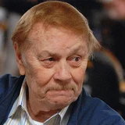

It ended suddenly when Johnson had to retire in 1991 because of an HIV diagnosis.
“I prayed to the skies above and I said if we ever get a player on our team like Magic Johnson again, I will never ever, ever take that player for granted,”


Jerry Buss on Magic Johnson, and Magic Johnson on Jerry Buss: every quote in the archive, newest first. Each one links to its original source.
It ended suddenly when Johnson had to retire in 1991 because of an HIV diagnosis.
“I prayed to the skies above and I said if we ever get a player on our team like Magic Johnson again, I will never ever, ever take that player for granted,”
Jerry Buss and I talked about them and I said,
“I don't call Magic Johnson 'Magic Johnson.' I always call him Earvin Johnson, but he was Magic Johnson when he had the basketball in his hands. When he played and he didn't have the ball in his hands, he was Earvin Johnson.”
Responding to an article written by The California Post’s Lakers beat reporter Khobi Price suggesting that Jerry Buss should be next to be honored with a statue, Magic Johnson took to social media to emphatically agree.
“I 100% agree that Dr. Jerry Buss the greatest franchise owner in sports history and deserves a statue in front of Crypto arena soon in his honor,”
Responding to an article written by The California Post’s Lakers beat reporter Khobi Price suggesting that Jerry Buss should be next to be honored with a statue, Magic Johnson took to social media to emphatically agree.
“I 100% agree that Dr. Jerry Buss the greatest franchise owner in sports history and deserves a statue in front of Crypto arena soon in his honor,”
It ended suddenly when Johnson had to retire in 1991 because of an HIV diagnosis.
“I prayed to the skies above and I said if we ever get a player on our team like Magic Johnson again, I will never ever, ever take that player for granted,”
Jerry Buss and I talked about them and I said,
“I don't call Magic Johnson 'Magic Johnson.' I always call him Earvin Johnson, but he was Magic Johnson when he had the basketball in his hands. When he played and he didn't have the ball in his hands, he was Earvin Johnson.”
Johnson said Tuesday night, a day after Buss died.
“Forget just the basketball player, but the man that I am. I owe a lot to Dr. Buss.”
Most recently, Johnson said Buss took great pride in Johnson buying into the Los Angeles Dodgers, the team that had owned Los Angeles before Buss turned L.A. into Showtime for the Lakers.
“The first call I got when we bought the Dodgers was from Dr. Buss. I thought he bought the Dodgers, he was so happy,”
Jerry Buss on the possibility of Magic Johnson becoming a majority owner of the Detroit Pistons:
“Earvin is a whirlwind. He does so many things; I wouldn't doubt that he could do 10 more things. He seems to have unbounded energy. One day I see he's playing an exhibition game in Sweden and the next day he's on a business trip in New York and he's just all over the place. So, anything that Earvin says probably wouldn't surprise me, but I have not talked to him specifically about that.”